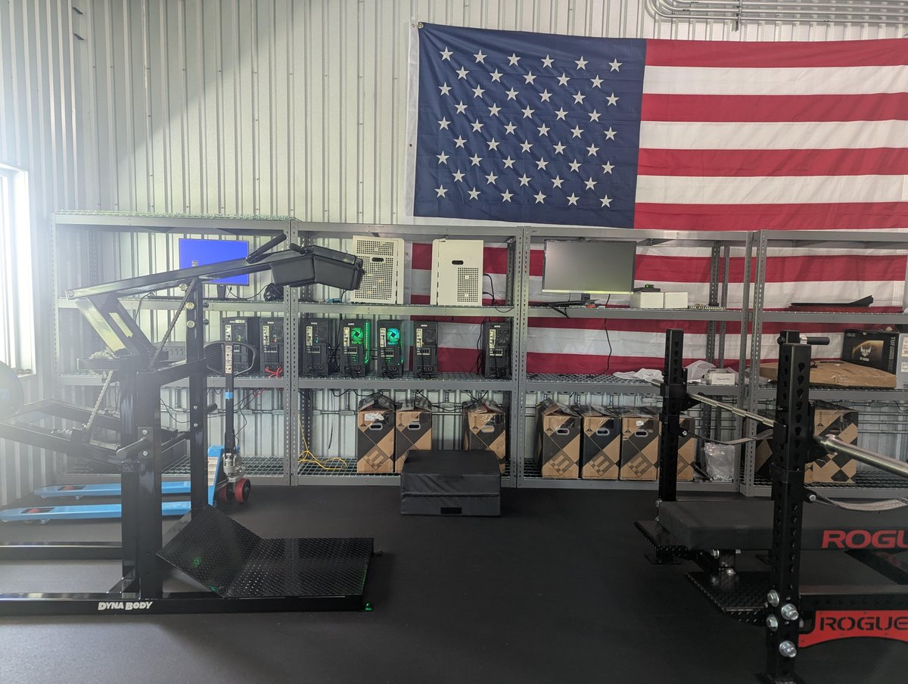
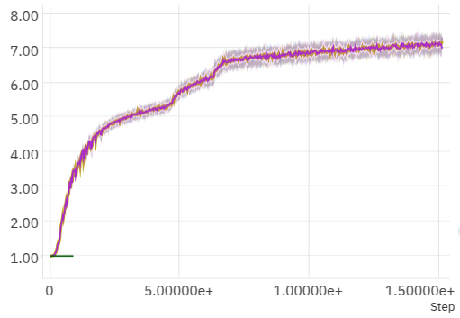
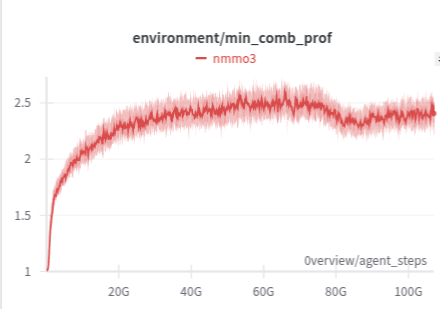

Reinforcement Learning on a Petabyte of Data at Home
6.2 petabytes uncompressed. Our agents played >12,000 years of Neural MMO 3 on a single 6x4090 tinybox in 80 hours. You can watch the agent live in your browser at puffer.ai. Everything described here is open source. Support our work for free by starring pufferlib on GitHub, or join discord.gg/puffer to get involved with dev!
The Task
Neural MMO 3 is a massively multiagent simulation. In our setup, just shy of 50,000 agents spread across 48 separate worlds learned to fight, forage, use tools, and even trade with each other on a live market. Succeeding on this task requires precise short-horizon control and coherent decision making over several hundred steps. You can read more about Neural MMO 3 in my previous article.
The Data
"Peta" (1,000,000,000,000,000) is a completely ridiculous prefix for the size of a training dataset. In what I like to refer to as LLM land, GPT4 pretraining used an estimated 13T tokens. If we're being strict, tokens are probably only 16-19 bits each (~25 TB total), but if we use a 4-byte int per token, this is still only 52 TB of training data. So our single-server RL experiment is using ~20-240x more data than GPT 4. For fun, I did a few different Fermi estimates of the total number of tokens used in training and inference by ALL LLMs since GPT4... and they all ballpark it at single-digit quadrillions of tokens. In other words, a few petabytes... about what we used in this one RL experiment. Do your own napkin math and see if your results agree!
The point of this obviously isn't to make a 1-to-1 comparison. It's that simulation gives us an unfathomable quantity of ground-truth data. In fact, we're still training at <5% of the speed of data generation. Neural MMO 3 can output >1M observations per second per cpu core. At ~1700 bytes/observation our 32 core CPU can generate 54 GB of data per second (300+ GB uncompressed). As for what the data actually is: agents see a 11x15x10 crop of their surroundings containing information about the terrain, items on the ground, and nearby agents and enemies. Each channel is a single byte. Agents also see some extra information about themselves, but this only adds ~57 bytes per observation.
Hardware
We used a single tinybox v1 with 6 RTX 4090s and a 32-core AMD EPYC 7532. The machine cost $25,000 from tinycorp. It's not exactly as affordable as a desktop, but it's not a $300,000 8xH100 either. The hardware situation in RL is pretty tough because 4090s are faster than A100s in most setups and about the same speed as H100s. We could improve this by optimizing bf16 (nerfed on consumer cards)... but not by anywhere near the factor of the price difference, and we don't need the extra VRAM. A few people rent similar machines on Vast, but they're not all that common.

If you just rent H100s instead, you end up paying the whole price of a tinybox in 2-4 months. This doesn't make much sense, but I can't wholeheartedly recommend buying your own hardware either. I had to take apart both of my boxes to tighten power cables in one and replace a power cable in the other, which ended up taking me two whole days including diagnostics. There really isn't a better option though, and I'm still going to endorse tinyco (not sponsored) over the alternatives here based on my experience with other vendors. It has apparently gotten better with v2, but just know that maintenance is not going to be like fixing a desktop. If you want to DIY instead, go with a rig. You will not be able to match the form factor as a side project.
The Model
The 3d data is multi-hotted into 59 channels to produce the uncompressed representation fed into the first convolution of our model. This layer uses 5x5 convolutions at stride 3 with 128 output channels. The second convolution layer is 3x3 at stride 1 with 128 input and output channels. Extra player features concatenated with the hidden state in both their original continuous and one-hot forms. The rest of the model is just a 512 dim LSTM, single-layer output heads for the action logits and value function, and ReLU activations. The total size is a mere 3.4 million parameters, which is small enough for us to run on a single CPU core in your browser with a horribly unoptimized C-port of the PyTorch model.
Training
This experiment is one of our main showcases for PufferLib 3.0. You can read more about our algorithmic breakthroughs in this previous article. The agent learns more than in the 6x smaller 100B observation experiment we ran in PufferLib 2.0, but just as importantly, the training curves are more stable.


Neural MMO has not changed meaningfully since PufferLib 2.0, and we didn't do much direct work on this task while developing PufferLib 3.0. We increased the model size, added one layernorm, reswept hyperparameters (standard in our setup), and naively scaled DDP training to 6 GPUs. That's it. These results are mostly a testament to the algorithmic improvements made in PufferLib 3.0, with some credit given to overhead reduction that made multigpu sensible.
The total effective batch size is over 3 million with an effective minibatch size of over 180k. This is not exactly unheard of, and the OpenAI Five report showed strong scaling with batch size. It doesn't work on all of the environments in PufferLib though - you generally benefit from scaling more on harder problems. Agents in Neural MMO 3 only get rewarded for leveling up and obtaining stronger equipment and penalized for dying. By the end of training, episodes lasted an average of 900 steps and contained an average of 16 rewards. I'm going to say that this is harder than Emergent Tool Use but much easier than DoTA on the basis of my subjective opinion, which is therefore objective fact. I live stream RL research and applications here on X for an ungodly number of hours every week, so come yell at me there if you disagree!